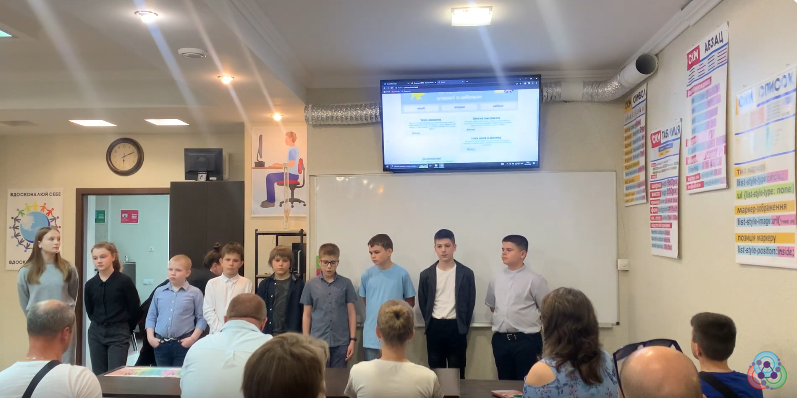
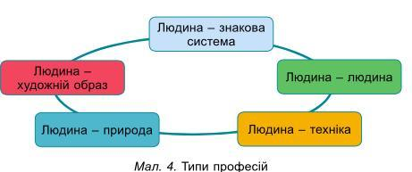
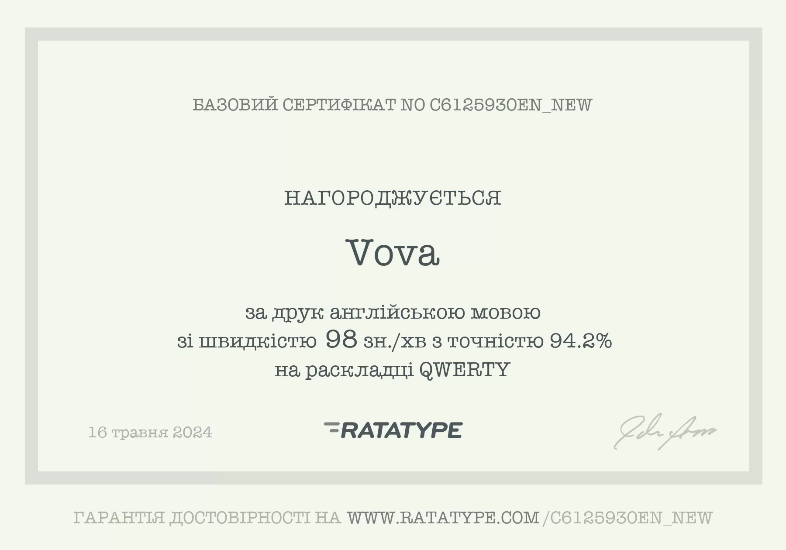

Привіт, мене звати Вова я розкриваю себе людину-«Знакову Систему» Це - головний, провідний предмет праці – умовні знаки, цифри, коди, природні чи штучні мови. Підверджує це тест.
Приклади професій знакової системи
Мої захоплення, що відповідають людині знаковаої системи це, програмування, архітектурара, гурткова діяльність. Арахітектура і гуртки є не зовсім знаковою системою, але також мають в собі знаки. Я приймав участь в архітектурному проекті, що також є знаковою системою, що розкриває в собі знаки в виді макету або в деталях макету.
